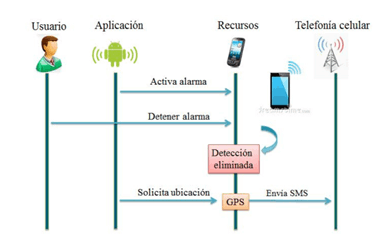

Sistema de monitoreo de convulsiones tonicoclónicas para pacientes con epilepsia
Sistema de control que permite el monitoreo, control del progreso de las convulsiones, incluye aplicación que almacena y muestra la información sensada.
Para realizar el monitoreo se utiliza un sensor de movimiento, con un acelerómetro. Se implementa un algoritmo a partir de los detectores de movimiento para la determinación de si es convulsivo o no.
La aplicación en esta etapa utiliza tres recursos, el primero es la alarma sonora, en caso de que se trate de una falsa alarma el usuario podrá cancelarla, volviendo así al estado inicial de espera de la aplicación.
Después de que la alarma ha sido iniciada se utilizará el segundo recurso que es el posicionamiento, la aplicación utilizará el GPS determinando la longitud y latitud del dispositivo móvil. Finalmente la información determinada en el punto anterior será enviada utilizando el tercer recurso, que consiste en enviar los datos por medio de un mensaje de texto a través de la red de telefonía celular.